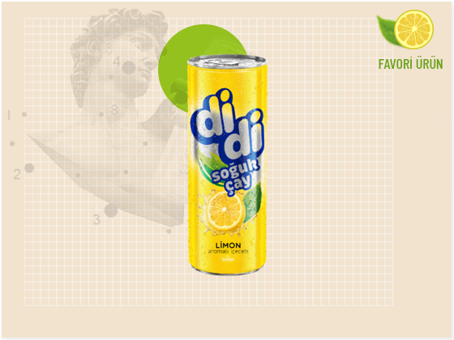
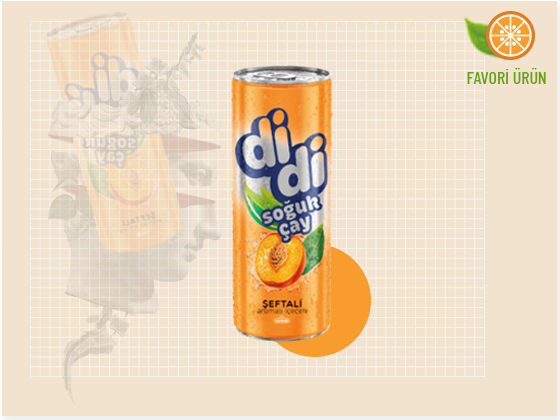
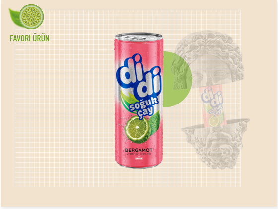
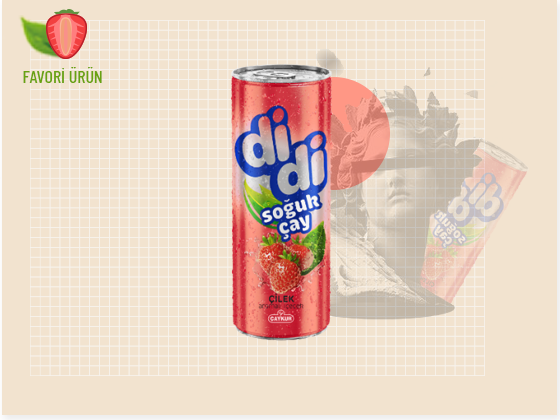
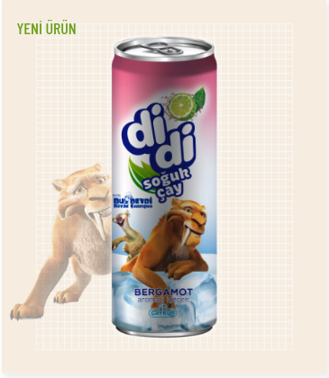
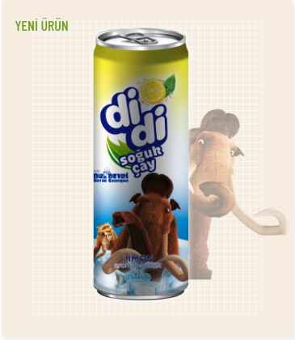
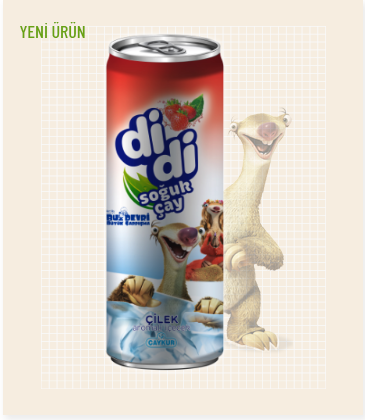
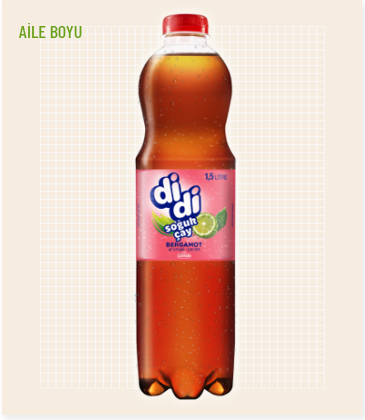
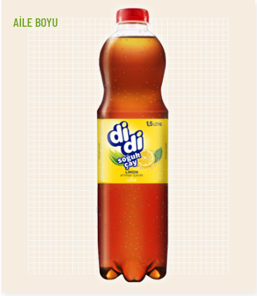

Didi Limonlu Soğuk Çay
Gerçek limon ile gerçek çayın harmanlaşmış halidir. Özenle Doğu Anadolu`dan toplanan limonlar, Rize`nin efsanesi ile buluşur. Bu lezzet sizi eşsiz ferahlığa ulaştıracaktır.

Didi Şeftali Soğuk Çay
Gerçek şeftali ile gerçek çayın harmanlaşmış halidir. Özenle Antalya`dan toplanan portakallar, Rize`nin efsanesi ile buluşur. Bu lezzet sizi eşsiz mutluluğa ulaştıracaktır.

Didi Bergamotlu Soğuk Çay
Gerçek bergamot ile gerçek çayın harmanlaşmış halidir. Özenle Asya`dan toplanan bergamotlar, Rize`nin efsanesi ile buluşur. Bu lezzet sizi eşsiz hazza ulaştıracaktır.

Didi Çilekli Soğuk Çay
Gerçek çilek ile gerçek çayın harmanlaşmış halidir. Özenle Mersin`den toplanan çilekler, Rize`nin efsanesi ile buluşur. Bu lezzet sizi eşsiz neşeye ulaştıracaktır.




